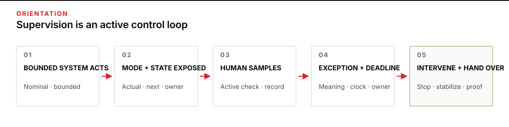
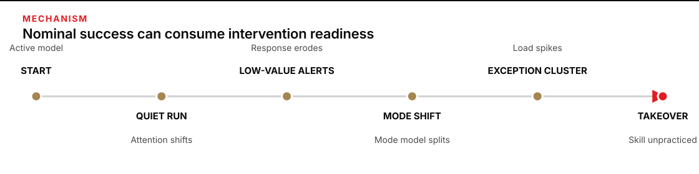
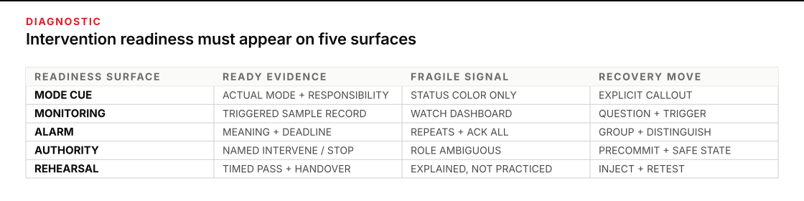

When the bounds hold but the supervision fails
A bounded autonomous run can still fail at the human–automation boundary. The system may stay inside its write path, respect its limits, and enter the prescribed hold state—while the supervising human misses the mode change, misreads an acknowledgment as a resolution, or reaches the exception without a practiced intervention. None of those outcomes is well explained by “pay more attention.” Supervision is a designed operating task. It needs observable cues, a meaningful sampling routine, response deadlines, usable authority, and rehearsal.
Give this work 45–60 minutes. You will leave with a supervision risk map and a timed intervention rehearsal for one bounded task. Together they make a reviewer’s readiness inspectable: what mode the system is in, what the automation is and is not doing, what the human must sample, what each alarm means, how long intervention can wait, who can stop, what a handover carries, and what evidence proves the recovery was practiced.
Begin after the autonomy contract, live run, stop authority, and three-layer bound in P6 · Going deeper. Those controls define what the system may do. The work here asks a different question: can the human side of the control loop detect a change and take over correctly before the deadline?

Figure transcript
Stage one is BOUNDED SYSTEM ACTS: the automation operates in its nominal state within technical limits. Stage two is MODE AND STATE EXPOSED: the interface shows actual mode, likely next mode, system condition, and whether the human or automation owns the next action. Stage three is HUMAN SAMPLES: the supervisor answers a triggered, active monitoring question and records the result. Stage four is EXCEPTION AND DEADLINE: an alarm states the condition, consequence, required action, responsible role, and time available. Stage five is INTERVENE AND HAND OVER: an authorized person stops, stabilizes, takes over, or transfers responsibility and preserves evidence. The intervention and handover evidence feeds the next supervision cycle and the next rehearsal.
Design supervision as an active control task
Supervision is not passive availability. It is a loop: the bounded system acts; the interface exposes its actual state and responsibility; the human performs an active sample; an exception supplies meaning and a response deadline; and an authorized person intervenes, stabilizes, or hands over. If any link is missing, “human in the loop” describes staffing, not control.
This problem is old enough to have a useful name. In “Ironies of Automation”, Lisanne Bainbridge observed that automation often leaves people responsible for abnormal conditions while reducing the ordinary participation through which they learned the process. Later human-factors work calls one consequence out-of-the-loop performance: after extended supervisory control, the person may hold a weaker picture of what the system is doing and respond more slowly when control returns. A NASA study of adaptive automation and situation awareness treats operator involvement and preparedness for unexpected states as linked design concerns.
Keep the mode model synchronized
A mode is the active control regime: for example, the system may be acting automatically, holding output pending verification, or waiting for manual direction. Mode confusion occurs when the system’s actual regime and the supervisor’s mental model diverge. A green overall status does not repair that divergence. The cue must answer four questions in one glance:
- What is the actual mode now?
- What action is the automation performing—or deliberately not performing?
- What transition happened, and what transition may happen next?
- Who owns the next decision, and by when?
NASA’s current crew-interface requirements require visible current state, future state or mode, system health and configuration, conspicuous mode-change notice, and indication of whether the human or automation is responsible for an operation. That is a strong test for ordinary desk automation too. A label such as HOLD is incomplete when it does not say what is held, why, who now owns action, and when delay becomes consequential.
Give attention a job, not a slogan
Attention allocation is the continual choice—often implicit—of what to inspect now and what to defer. During long nominal runs, attention moves toward work that produces visible progress. That is usually rational allocation, not negligence. The supervision design fails when it assumes that a person can continuously watch a quiet display and remain ready for a rare, time-bounded exception.
A monitoring task is an active question with a trigger and a recorded answer. “Watch the dashboard” is not one. “At every state transition and every 15 minutes, state the active mode, identify the next protected boundary, and record whether the last output matches the expected state” is. The trigger can be time, a mode change, an output count, or an anomaly. The answer must leave enough evidence to tell whether sampling actually occurred.
Research on automation bias and automation complacency sharpens the mechanism. Automation bias is overreliance on a recommendation or cue, producing either omission errors—failing to act because the aid did not prompt—or commission errors—following a bad prompt. “Complacency” is the literature’s label for insufficient sampling under particular task, attention, and automation conditions; it is not a judgment that a person is lazy. Parasuraman and Manzey’s review found attentional mechanisms central, especially when manual tasks compete with automated monitoring, and found that simple practice or instructions alone did not eliminate the effects. Design the independent check into the task rather than hoping vigilance will appear.
Make alarms actionable and stop authority usable
An alarm should compress a decision, not merely announce discomfort. It needs the condition, operational consequence, required response, response deadline, responsible role, and state after acknowledgment. The FAA’s human-factors analysis of safety alerts emphasizes that useful alerts detect hazards requiring action, avoid activating when no action is needed, provide new information, remain perceptible, and limit redundant notices that increase workload. Alarm fatigue is the reduced detection, interpretation, or response that can develop in an environment of excessive or low-value alarms; treat it as a property of the alert system, workload, and operating practice, not as an individual defect. Repeated low-value alerts train an operating pattern: acknowledge the banner to regain the workspace. That pattern can migrate to the one alarm that matters.
Separate three states explicitly:
- Active: the condition exists and the response clock is running.
- Acknowledged: a named person has seen the alarm; the condition may still exist.
- Resolved: the required response passed its evidence check and the condition is closed.
Exception overload occurs when several anomalies, mode changes, and ordinary tasks arrive together faster than a person can interpret and act on them. The remedy here is not a throughput calculation. It is a safe degraded state, causal grouping of duplicate alarms, explicit priority and deadlines, a handover path, and a stop rule that fires before interpretation exceeds available time.
Stop reluctance is the tendency to continue despite a stop cue when stopping destroys work, invokes blame, requires inaccessible permission, or seems worse than continuing for one more cycle. Stop authority must therefore be psychologically and operationally credible. Precommit the threshold, name the person who can act, preserve partial work where safe, and rehearse the command path. NASA’s crew-interface standard also warns that human intervention is not a valid control when the time available is shorter than the human’s time to detect, decide, and act. If the deadline cannot accommodate that sequence, the system itself must enter a safe state.
Rehearse the vulnerable skill, not the generic one
Skill decay is selective. In a simulator study of 16 airline pilots, Casner and colleagues found that some manual control skills were largely retained while cognitive tasks that depended on active engagement were more vulnerable. The useful conclusion is not that every manual skill inevitably decays. It is that a rehearsal must target the exact intervention: recognizing the mode, rebuilding the system picture, choosing the authorized action, performing it before the deadline, and handing over a stable state.
A briefing is not a rehearsal. Inject a real mode transition in a safe simulation or test copy; hide nothing the live interface would show; start the clock; require the supervisor to call out the mode and responsibility; execute the stop, takeover, or escalation; and record the observed time, missed cues, state after action, and evidence of recovery. A missed deadline is useful evidence when it leads to redesign and a retest.

Figure transcript
At START, the supervisor has an active model of the system and the intervention. During QUIET RUN, the automation succeeds and attention rationally reallocates to other work. During LOW-VALUE ALERTS, repeated notices that require no action reinforce fast acknowledgment and reduce the signal value of the channel. At MODE SHIFT, a weak cue lets the actual mode diverge from the supervisor’s model. At EXCEPTION CLUSTER, several signals and competing tasks compress the time available to interpret responsibility. At TAKEOVER, the response deadline meets a cognitive and procedural skill that has not been rehearsed. Recovery adds active samples, explicit mode and responsibility cues, actionable alarms, precommitted stop authority, and timed rehearsal before the next run.
Worked case: the climate controller that behaved correctly
A museum runs a synthetic training copy of its archive-room climate controller. The controller may make narrow humidity adjustments inside approved ranges. Conflicting sensors force a protected SENSOR-HOLD: automatic adjustment stops, the room remains isolated, and the shift supervisor must verify the reference probe within eight minutes. If verification cannot finish, the supervisor has authority to stop the simulation and place the room in a stable manual configuration. No physical equipment is connected during this exercise.
The technical bounds are sound. The human supervision design is not.
| Time | System state | What the supervisor can see | Human-performance condition |
|---|---|---|---|
| 12:00 | Rooms A–D in AUTO-CORRECT | Overall banner: NOMINAL | The last exception rehearsal was four months ago. |
| 12:10–13:15 | Automation makes bounded adjustments | Nine repeated door-open advisories; none requires action | The supervisor acknowledges each banner while completing a conservation report. |
| 13:20 | Room C sensor readings begin to diverge but remain below the hold threshold | The trend is available in the room detail view | The supervisor is completing a conservation report; no monitoring trigger calls for a trend sample. |
| 13:22 | Room C changes to SENSOR-HOLD; automatic adjustment stops | Small amber mode badge and C-17 PROBE DISAGREEMENT · REVIEW IN 8 MIN; the overall banner remains green because containment succeeded | The supervisor uses ACK ALL, believing acknowledgment resumes correction. |
| 13:30 | Room C still in hold | Alarm is quiet; mode badge remains amber | No active sampling task asks who owns Room C or what is no longer automated. |
| 13:37 | Duration threshold exceeded in the simulation | Reinspection notice appears | The first unmistakable cue arrives after the response deadline. |
The controller did what its contract required. The supervisor did what the interface had repeatedly rewarded: clear banners and return to productive work. The failure belongs to the supervision system. Its mode cue was weak, the alarm set trained acknowledgment without action, the acknowledgment control hid the unresolved condition, responsibility changed without a clear handoff, and takeover had not been rehearsed recently.
Inject the failure, preserve the evidence, then recover
The training lead reproduces the sequence in the disconnected copy. At minute 70, nine advisory alarms have appeared. The lead injects a sensor disagreement and starts an eight-minute clock. The observed supervisor notices the alarm after three minutes, calls the overall state “green,” acknowledges it, and begins the reference-probe procedure at minute nine. The symptom is not “carelessness.” The evidence shows a mode-model mismatch, an alarm-action mismatch, and an intervention that takes longer than the response window.
The team stops the exercise and preserves the event timeline, mode-transition log, acknowledgment event, screen recording, spoken callouts, and intervention time. It then makes five corrections:
- The mode cue reads
ROOM C · SENSOR-HOLD · AUTO ADJUSTMENT OFF · HUMAN VERIFY BY 13:30. - Repeated door notices are grouped under one cause and removed from the critical alarm channel when no action is required.
ACKNOWLEDGEDremains visibly different fromRESOLVED; acknowledgment never silences the mode cue or deadline.- The monitoring task requires a spoken and logged mode/responsibility check at every transition and at fixed intervals.
- The supervisor rehearses the exact verify-or-stop sequence, including a handover, against the eight-minute limit.
On retest, the supervisor calls out the hold and ownership in 24 seconds, begins verification in 51 seconds, discovers that the reference probe is unavailable, invokes stop authority at 2 minutes 40 seconds, and hands over the held room, unresolved condition, remaining evidence, and restart owner. The pass is not confidence. It is the recorded sequence, the protected final state, and performance inside the deadline.
Guided practice: supervise the greenhouse copy
Use only the supplied facts. This is a disconnected greenhouse simulator; no live device, customer data, purchase, message, or external system is in scope.
Mode card: AUTO-WATER means the controller may adjust watering inside its bounds. SENSOR-HOLD means automatic adjustment is off and a human verification is required. MANUAL-VERIFY means the named operator owns the prescribed check. Acknowledgment silences a sound; it does not change a mode or close a condition.
| Time | Shift evidence |
|---|---|
| 08:00 | Handover: Bay 2 is in SENSOR-HOLD. Automatic watering is off. Soil-probe verification is due by 08:20. The on-duty operator may verify or stop the simulator. |
| 08:05 | Four low-priority door advisories repeat. They require no action during this exercise. |
| 08:12 | B2-PROBE-MISMATCH · ACK SILENCES ONLY · VERIFY BY 08:20 · ON-DUTY OPERATOR. |
| 08:14 | Overall banner is green because output is contained. Bay 2 still reads SENSOR-HOLD · AUTO WATERING OFF. Six minutes remain. |
Predict before revealing: write the actual mode, what the automation is not doing, the responsible role, the deadline, and the first authorized action. Then choose:
- Use
ACK ALLand wait for automatic watering to resume. - Call out the actual mode, responsibility, and deadline; begin the prescribed probe verification; stop the simulator if the check cannot finish safely before 08:20; hand over the unresolved state if responsibility changes.
- Force
AUTO-WATERso the green banner and Bay 2 mode agree.
Stop condition: stop the exercise if the supplied procedure is unavailable, the mode cannot be confirmed, the responsible role is absent, or the verification cannot complete before 08:20. Do not invent a bypass.
Reveal the intervention
B is the defensible choice. At 08:14 the actual mode is SENSOR-HOLD; automatic watering is off; the on-duty operator owns verification or stop; and six minutes remain. The first move is a mode/responsibility/deadline callout followed by the prescribed check. A fails because acknowledgment does not change the mode or resolve the condition. C overrides the protective state without evidence. If the check cannot finish, stop preserves the boundary; a handover must carry the actual mode, unresolved alarm, deadline or expired deadline, action already taken, protected state, and named restart authority.
Copy the supervision risk map and rehearsal record
Complete the map before unattended time begins. Use one row per supervision point where mode, responsibility, required attention, or intervention can change. A blank is a design finding, not an invitation to write “stay alert.”
# Supervision risk map
System / task:
Technical-bound evidence already established:
Purpose of human supervision:
Nominal mode(s):
Exception / degraded mode(s):
Maximum bounded unattended interval:
| Supervision point | Actual mode cue | Active monitoring task + trigger | Alarm meaning | Response deadline | Required intervention | Named authority | Handover payload | Skill rehearsal | Passing evidence | Stop / return-to-human rule |
|---|---|---|---|---|---|---|---|---|---|---|
| State transition | | | condition + consequence | | | | mode + unresolved condition + clock + action + protected state + restart owner | scenario + cadence | artifact + pass condition | |
Alarm states shown separately: ACTIVE / ACKNOWLEDGED / RESOLVED
Safe state when human response time exceeds time-to-effect:
Condition that invalidates this map:Then test one row. The person being rehearsed should use the live-like interface and ordinary procedure, not a narrated answer.
# Intervention rehearsal
Scenario ID / date:
Initial actual mode:
Injected mode transition or exception:
Visible mode cues:
Expected spoken callout (mode / automation action / human responsibility):
Active monitoring task and trigger:
Alarm meaning and state after acknowledgment:
Response deadline:
Authorized operator / stop authority:
Expected intervention:
Stop threshold and safe state:
Required handover payload:
Passing evidence and time limit:
Observed detection time:
Observed decision time:
Observed intervention time:
Actual final state:
Missed or ambiguous cues:
Evidence captured:
Recovery / redesign:
Retest result:
Next rehearsal trigger or date:A strong record can fail the first rehearsal. It becomes strong when the failure is specific enough to repair: “mode detected in 74 seconds; responsibility omitted from callout; stop completed after deadline because authority was not visible.” “Operator needs more vigilance” is neither evidence nor a recovery plan.

Figure transcript
MODE CUE is ready when actual mode, consequence, next transition, and responsibility are visible; status color alone is fragile; recover with an explicit mode and responsibility callout. MONITORING is ready when a triggered active sample leaves a record; watch the dashboard is fragile; recover by naming the question, trigger, and evidence. ALARM is ready when condition, consequence, action, deadline, owner, and acknowledgment state are visible; repeated notices and ACK ALL are fragile; recover by grouping causes, removing nonactionable noise, and separating acknowledgment from resolution. AUTHORITY is ready when one named role can intervene or stop; ambiguous shared responsibility is fragile; recover by precommitting the decision and safe state. REHEARSAL is ready when a timed exception, intervention, final state, and handover pass are recorded; explanation without practice is fragile; recover by injecting the mode transition, measuring, redesigning, and retesting.
Self-check: is intervention readiness real?
- The overall dashboard is green while one component is in a protected hold requiring human action. Which cue governs the intervention decision?
- An alarm has a sound, severity color, and acknowledgment button. What information is still required?
- A supervisor can explain the stop procedure but has never performed it against a clock. What evidence is missing?
- The system reaches harm in 20 seconds; representative rehearsals require 55 seconds from detection to safe state. Is a human response an adequate control?
- After a correct stop, responsibility changes at shift handover. What must travel with it?
Reveal the readiness test
- The component’s actual mode, consequence, owner, and deadline. “Green” may mean containment worked, not that no human action remains.
- The condition and consequence, required response, response deadline, responsible role, and whether acknowledgment changes anything besides notice state.
- A timed intervention record showing detection, correct mode model, authorized action, final protected state, handover, misses, and retest.
- No. The system needs an automatic safe state because the time-to-effect is shorter than demonstrated human detection, decision, and action time.
- Actual mode, unresolved condition, clock or expired deadline, action already taken, current protected state, relevant evidence, and who owns restart.
Put one bounded desk task under supervision
Choose a low-consequence task that already has technical bounds and produces only a draft, local analysis, or synthetic result. Use a copy of the inputs and keep every output in a draft-only location. Map one nominal mode, one exception mode, one mode transition, one active monitoring task, one actionable alarm, and one stop or handover. Then run a five-minute injected exception with a second person or in a self-contained simulation.
Stop if the current mode cannot be proven, the alarm lacks meaning or deadline, responsibility is shared only by implication, the intervention procedure is missing, or the required action cannot complete before the consequence. Those findings mean the human layer is not yet a control. Return the task to attended, low-consequence operation while the supervision design is repaired.
Return to a human authority before applying this pattern to safety, personnel, money, access, privacy, legal position, external communications, irreversible records, or any system where stopping itself changes operational risk. Bring the completed map, the failed and passed rehearsal records, and the timing evidence. NIST’s AI Risk Management Framework Core supports this division of labor: distinguish human and system oversight roles, assign responsibility for superseding or deactivating a system, and connect post-deployment monitoring to incident response, recovery, and change management.
Sources
- Lisanne Bainbridge · Ironies of Automation — the foundational account of abnormal-condition responsibility, process knowledge, and the new human problems automation can create.
- Parasuraman & Manzey · Complacency and bias in human use of automation — an evidence review connecting automation bias and insufficient monitoring to attention, workload, task, and system conditions.
- NASA · A Situation Awareness-Based Approach to Adaptive Automation — research on automation allocation, operator involvement, situation awareness, and preparedness for unexpected states.
- NASA Human Integration Design Handbook · Crew Interfaces — current requirements for mode visibility, responsibility, transition notice, override, safe control transfer, and human response-time limits.
- FAA · Human Factors Analysis of Safety Alerts — design criteria for actionable, salient, nonredundant alerting.
- Winters et al. · Alarm Fatigue: Causes and Effects — a review of avoidable alarm load, inadequate response, and system-level causes and effects.
- Casner et al. · The Retention of Manual Flying Skills in the Automated Cockpit — simulator evidence that retention differs by skill and that cognitive engagement matters.
- NIST AI RMF Core — role differentiation, trained and empowered personnel, deactivation responsibility, monitoring, incident response, recovery, and change management.